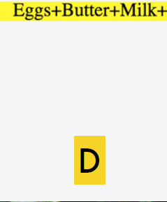

slack-channel: ti1506-students.slack.nl


At the end of this lecture, you
should be able to …
•Position and style HTML elements according to a given
design of a Web page
•Employ pseudo-classes and pseudo-elements
•Employ CSS’s data access/creation facilities and reflect
upon them
•Write CSS media queries
•Create simple CSS-based animations
2

A bit of context

A brief history of CSS
4

A brief history of CSS
4
•CSS 1: a W3C recommendation in 1996
•Support for fonts, colors, alignment, margins, ids and classes

A brief history of CSS
4
•CSS 1: a W3C recommendation in 1996
•Support for fonts, colors, alignment, margins, ids and classes
•CSS 2: a W3C recommendation in 1998
•Support added for media queries, element positioning

A brief history of CSS
4
•CSS 1: a W3C recommendation in 1996
•Support for fonts, colors, alignment, margins, ids and classes
•CSS 2: a W3C recommendation in 1998
•Support added for media queries, element positioning
•CSS 2.1: a W3C recommendation in 2011
•Fixed errors and added support for features widely
implemented in major browsers

A brief history of CSS
•CSS 1: a W3C recommendation in 1996
•Support for fonts, colors, alignment, margins, ids and classes
•CSS 2: a W3C recommendation in 1998
•Support added for media queries, element positioning
•CSS 2.1: a W3C recommendation in 2011
•Fixed errors and added support for features widely
implemented in major browsers
•CSS 3: currently under development; specification is split up
into modules; progress varies between modules
4
http://www.w3.org/Style/CSS/current-work
•CSS 4: some modules have reached “level 4” status

CSS 3+: a tale of many modules
6

CSS 3
•Impossible to write CSS that relies on modern features and
works across all browsers!
•Implementation of CSS 3 features should be decided based on
•intended users (mostly in the US or China or … ?)
•the mode of usage (smartphone, touch-screen or …?)
•the type of Web app (are 3D animations necessary?)
•JavaScript libraries can help front-end developers to build
cross-browser apps (e.g. Modernizr)
8

Revision: chapter 3
body {
background-color: #ffee22;
width: 800px;
margin: auto;
}
h1 {
color: maroon;
}
p span {
color: gray;
border: 1px solid gray;
}
p.last {
color: green;
}
What is the result of applying the CSS? (Multiple answers are possible)
flickr@nathaninsandiego

1 body {
2 background-color: #ffee22;
3 width: 800px;
4 margin: auto;
5 }
6 h1 {
7 color: maroon;
8 }
9 p span {
10 color: gray;
11 border: 1px solid gray;
12 }
13 p.last {
14 color: green;
15 }
Chapter 3 of the course book
11
CSS describes how elements in the DOM should be rendered.
selector
property
value
my_file.css
•Three types of style sheets:
(1) browser’s style sheet
(2) author’s style sheet
(3) user’s style sheet
overrides

1 body {
2 background-color: #ffee22;
3 width: 800px;
4 margin: auto;
5 }
6 h1 {
7 color: maroon;
8 }
9 p span {
10 color: gray;
11 border: 1px solid gray;
12 }
13 p.last {
14 color: green;
15 }
Chapter 3 of the course book
11
CSS describes how elements in the DOM should be rendered.
selector
property
value
my_file.css
•Three types of style sheets:
(1) browser’s style sheet
(2) author’s style sheet
(3) user’s style sheet
overrides
•Style sheets are
processed in order; later
declarations trump
earlier ones (if they are
on the same level)

Pseudo-elements
and
pseudo-classes

A detour: the rendering engine
•More than 30 pseudo-classes
•Support varies according to the rendering engine
13

Pseudo-class
14

Popular pseudo-classes
17
:nth-child(X) any element that is the Xth child element
of its parent
:nth-of-type(X) any element that is the Xth sibling of its
type
1 <main>
2 <h2>Todos</h2>
3 <p>Today’s todos</p>
4 <p>Tomorrow’s todos</p>
5 <p>Saturday’s todos</p>
6 <p>Sunday’s todos</p>
7 </main>
1 p:nth-child(2) {
2 color:red;
3 }
4
5 p:nth-of-type(2) {
6 background-color:green;
7 }
{
siblings
<main>
<h2>Todos</h2>
<p>Today’s todos</p>
<p>Tomorrow’s todos</p>
<p>Saturday’s todos</p>
<p>Sunday’s todos</p>
</main>
p:nth-child(3) {
color:red;
}
p:nth-of-type(4) {
background-color:green;
}
What is the result of applying the CSS?
flickr@25363236@N07

:not(X)
matches all elements that are not represented by selector X
Popular pseudo-classes
22
1 <main>
2 <h2>Todos</h2>
3 <p id=“firsttodo">Today's todos</p>
4 <p class=“todo">Tomorrow's todos</p>
5 <p class=“todo">Saturday's todos</p>
6 <p>Sunday’s todos</p>
7 </main>
1
2 color:orange;
3 }
el1 el2: Selects all <el2> elements inside <el1>
whitespace in selectors implies the universal selector: *
1 main *:not(.todo) {
1 <main>
2 <h2>Todos</h2>
3 <p id=“firsttodo”>Today's todos</p>
4 <p class=“todo”>Tomorrow's todos</p>
5 <p class=“todo”>Saturday's todos</p>
6 <p>Sunday’s todos</p>
7 </main>
1 main *:not(.todo) {
2 color:orange;
3 }
Which lines appear in orange?
flickr@mathiasappel

Pseudo-elements

Pseudo-elements
Pseudo-element: creates an abstractions about the document tree
beyond those specified by the document language.

Data in CSS

CSS can make use of data stored in HTML elements.
CSS & data-* (the preferred way)
33
1 <main>
2 <h2>Todos</h2>
3 <p id="t1" data-due="1/1/2015" >Walk the dogs</p>
4 <p id="t2" data-due="12/12/2014">Wash the cups</p>
5 <p id="t3" data-due="1/12/2014">Clear the pens</p>
6 </main>
1 p::after {
2 background-color:gold;
3 border: 1px solid;
4 font-size: 70%;
5 padding: 2px;
6 margin-left: 50px;
7 content: "due " attr(data-due);
8 }
9 p::before {
10 content: url(http://www.abc.de/dot.png);
11 }
<p>Today's todos</p>
<ul>
<li>Walk the dogs</li>
<li>Wash the cups</li>
<li>Clear the pens</li>
</ul>
<p>Tomorrow's todos</p>
<ul>
<li>Walk the dogs</li>
<li>Wash the dishes</li>
<ul>
body {
counter-reset: cli;
}
ul {
list-style: none;
}
li::before {
counter-increment: cli;
content: counter(cli)": ";
}
How are the list elements enumerated?
flickr@darrenputtock

Deciding which CSS
features to use

Browser-specific prefixes
40
CSS is under active development, many features are not stable,
are often used with browser vendor prefixes, and,
might change in the future (as the specification changes).
1 main:-webkit-full-screen {
2 } /* Chrome */
3
4 main:-moz-full-screen {
5 } /* Firefox */
6
7 main:-ms-fullscreen {
8 } /* Internet Explorer */
9
10 main:fullscreen {
11 } /* W3C proposal */

Element positioning
with float, position
and display
What is the result of applying the CSS?
<p>
<span>Milk + </span>
<span>Butter + </span>
<span>Eggs + </p>
</p>
p {
background-color:yellow;
}
span {
float:right;
}

flickr@mathiasappel

position:absolute
50
the element is taken out of the normal flow (no space is reserved)
span {
width:50px;
height:50px;
}
#A {
background-color: yellow;
position:absolute;
left:10px;
}
#B {
background-color: green;
position:absolute;
right:10px;
}
#C {
background-color: orange;
position:absolute;
bottom:50px;
left:10px;
}
#D {
background-color:blue;
position:absolute;
right:10px;
bottom:50px;
}
<p>
<span id=“A”></span>
<span id=“B”></span>
<span id=“C”></p>
<span id=“D”></p>
</p>
What is the result of applying the CSS?
flickr@darrenputtock

CSS media queries

Not just one device but many…
55

Not just one device but many…
55
•Different devices should be served different styles, e.g.
•Printing a todo list: ideally only b/w, no color blocks
•Viewing a todo list on a small screen: remove non-
essential information (footer, etc.)
•Viewing a todo list on a large screen: present all
available information
•Text-to-speech devices: remove non-essential
information (e.g. http://responsivevoice.org/)
•CSS media queries enable the use of device-dependent
(i.e. media-type dependent) stylesheets

Animations and
transitions

In general …
59

In general …
59
•CSS styles (states) are defined by the user, the rendering
engine takes care of the transition between styles

In general …
59
•CSS styles (states) are defined by the user, the rendering
engine takes care of the transition between styles
•Animations consist of:
•an animation style (linear, etc.)
•a number of “keyframes” that act as transition waypoints

In general …
59
•CSS styles (states) are defined by the user, the rendering
engine takes care of the transition between styles
•Animations consist of:
•an animation style (linear, etc.)
•a number of “keyframes” that act as transition waypoints
•Transitions are animations (with a simpler syntax):
•that consist of exactly 2 states: start and end state

CSS vs. JavaScript animations
60
•Easy to use (standard CSS) — no need to learn JavaScript
•Rendering engines are optimised for CSS-based
animations
•CSS animations can do much more than animating buttons

CSS animation example (Firefox)
62
1 #p1 {
2 animation-duration: 5s;
3 animation-name: pToRight;
4 top: 5px; left: 5px;
5 }
6
7 @keyframes pToRight {
8 from {
9 top:5px; left:5px;
10 background-color: lightgreen;
11 }
12 50% {
13 background-color: red;
14 }
15 to {
16 top:5px; left:250px;
17 background-color: lightblue;
18 }
19 }
duration of animation (seconds)
animation name (@keyframes)
http://jsfiddle.net/Lyh5qvfo/1/